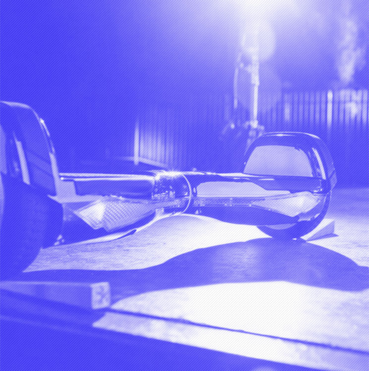

Преимущества
Дизайн
Внешний вид скутера дышит идеями футуризма:
- плавные линии
- подсветка светоидиодными индикаторами
- рельефные бамперы, оснащенные защитными панелями
Цвет
Модель представлена сразу в нескольких цветах.
Смотреть видео
Маневренность, легкость, экологичность
Внешний вид скутера дышит идеями футуризма:
Модель представлена сразу в нескольких цветах.
Смотреть видео
Помимо «умной» подсветки, Hovertrax 4.0 снабжён двумя скоростными режимами.
Максимальная скорость
Скоростных режима